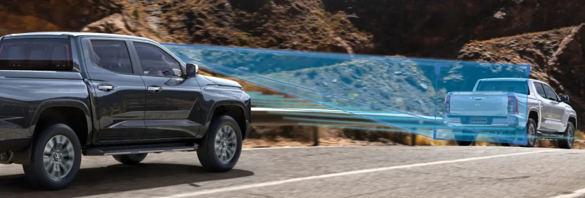
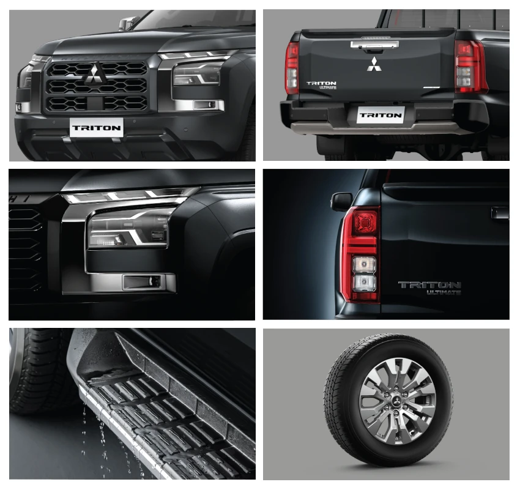

Mitsubishi All New Triton
Tangguh, Nyaman, dan Dapat Diandalkan
Review, Spesifikasi & Harga Mobil Mitsubishi All New Triton Mitsubishi New Triton diawali dari segi eksterior, mobil ini menawarkan desain Dynamic Shield yang memiliki grille depan berbalut aksen chrome dan dibuat menyatu dengan lampu utama yang menggunakan Bi-Functional LED Projector serta didukung Daytime Running Light (DRL).
Pada bagian depan telah disematkan Front Under Guard yang berguna untuk menahan benturan saat berkendara di medan terjal. Mobil ini juga memiliki ground clerance tinggi yang membuatnya bisa melaju di medan banjir tanpa hambatan. Selain itu, Mitsubishi merancangnya dengan kap mesin yang posisinya dibuat lebih tinggi agar terlihat lebih kekar dibandingkan pendahulunya.
Desian eksterior yang gagah dan modern berpadu dengan kemewahan di sisi interior. Mobil ini memiliki ruang interior yang menawarkan kenyamanan dan kenikmatan berkendara. Mitsubishi merancangnya dengan bentuk dinamis dan menggunakan material berkualitas tinggi yang menjamin pemilik New Triton betah berlama-lama di dalamnya. Beragam fitur telah disematkan, dan salah satunya adalah TFT Color LCD Multi Information Display yang mendukung animasi 3D.
Mesin Tangguh & Ramah Lingkungan
Ditenagai oleh inovasi mesin yang tangguh namun ramah lingkungan yang berdampak pada efisiensi bahan bakar.
Reliabilitas Tinggi
Dirancang untuk menghadapi tantangan terberat, menggambarkan performa yang kuat dan gagah.
Teknologi Canggih & Fitur Terkini
Menggabungkan desain elegan dengan teknologi membuat pengalaman berkendara lebih nyaman sekalipun berada di medan yang sulit.


Detail Harga
| Type Mobil | Harga |
|---|---|
| DC Ultimate 4x4 AT |
|
| DC Exceed 4x4 MT |
|
| DC GLS 4X4 MT |
|
| DC HDX 4X4 MT |
|
| SC HDX 4X4 MT |
|
| SC GLX 4X2 MT |
|
Line-up All New Triton
Highlight All New Triton
Kekuatan Tak Terhentikan, Percaya Diri di Setiap Perjalanan
Ke mana pun lebih bertenaga dengan 2.4L common rail turbo intercooler engine generasi terbaru. Taklukkan segala rintangan, apapun adventure Anda.
Forward Collision Mitigation System (FCM)
FCM mendeteksi kendaraan dan pejalan kaki. Memberitahu pengemudi dengan peringatan audio dan visual, serta mengerem untuk menghindari atau mengurangi potensi tabrakan.
Automatic High Beam (AHB)
Untuk meningkatkan keselamatan dan kenyamanan berkendara di malam hari, lampu high beam berubah otomatis menjadi low beam saat mendeteksi kendaraan lain di depan.
Blind Spot Warning (BSW) with Lane Change Assist (LCA)
Sensor radar bumper belakang mendeteksi kendaraan di blind spot di kedua sisi. Jika kendaraan lain terdeteksi saat lampu sein menyala, indikator akan berkedip di kaca spion samping dan alarm berbunyi.
Rear Cross Traffic Alert (RCTA)
Saat mundur, jika sensor radar mendeteksi kendaraan bergerak, sistem memperingatkan melalui peringatan visual, suara dan kaca spion, membantu meningkatkan keselamatan dan mencegah potensi tabrakan.
Tire Pressure Monitoring System (TPMS)
Sensor Tire Pressure System memberikan kemudahan pengendara untuk memantau informasi tekanan udara pada ban mobil.
7 SRS Airbags
Mitsubishi Triton 2024 kini dilengkapi dengan 7 SRS airbags untuk perlindungan maksimal di setiap perjalanan. Dengan fitur keselamatan canggih ini, Anda dan penumpang dapat merasa lebih aman dan tenang. Mitsubishi Triton 2024 tidak hanya menawarkan performa unggul, tetapi juga komitmen terhadap keamanan Anda.
7 Inch Color LCD Multi Information Display
Menyajikan visualisasi informasi yang jelas dan intuitif, menjadikan pengalaman berkendara lebih nyaman dengan fungsionalitas yang canggih.

Eksterior Mitsubishi All New Triton
Front Beast Grill Design
Desain ikonik Mitsubishi Motors kini tampil lebih modern, semakin menegaskan kesan kokoh dan performa tinggi.
New Rear Design with Spoiler
Spoiler belakang hadir dengan desain baru yang memberikan kesan kokoh & tangguh
LED Headlamp With LED DRL & Foglamp
Kombinasi lampu memastikan pencahayaan yang optimal, memastikan perjalanan Anda lebih aman dalam berbagai kondisi cuaca, baik pada siang maupun malam hari.
*Varian DC GLS menggunakan Halogen
* Varian SC GLX & HDX dan DC HDX tidak dilengkapi Foglamp
*Tersedia di varian ULTIMATE & EXCEED
Rear Combination Lamp
Desain baru lampu belakang Triton Ultimate dengan design yang kokoh dan tangguh. memberi visibilitas yang baik bagi pengendara di belakang mobil Anda.
Side Step
Sidestep dengan desain yang tangguh dan anti slip, memberikan keamanan saat Anda naik kendaraan.
18 Inch Alloy Wheel Design
18 inch alloy wheel memberikan performa yang optimal dan stabil di berbagai medan, sekaligus membuat tampilan mobil Anda menjadi lebih sporty.
Interior All New Triton
Bigger space for your Adventure
Ciptakan momen petualangan yang seru. dengan kabin terluas di kelasnya memberikan rasa nyaman dan stabil saat berkendara.
* Hanya tersedia di varian ULTIMATE
8 Inch Audio Head Unit
Tingkatkan pengalaman audiovisual yang lebih berkesan dengan akses mudah ke berbagai fitur audio seperti pemutar musik, radio, dan koneksi smartphone.
* Hanya tersedia di varian ULTIMATE & EXCEED
Smartphone Wireless Charger
Tidak perlu takut daya baterai handphone habis, mengisi daya baterai handphone lebih mudah dengan Wireless Charging.
* Hanya tersedia di varian ULTIMATE
AC With Dual Zone Climate Control
Nikmati kenyamanan di dalam kabin dengan fitur pengaturan temperatur Dual Zone, memungkinkan pengemudi dan penumpang untuk menyesuaikan suhu udara sesuai preferensi.
* Hanya tersedia di varian ULTIMATE
Keamanan All New Triton
Blind Spot Warning (BSW)
Fitur radar sensor pada bumper belakang ini mampu mendeteksi adanya kendaraan di blin spot belakang, serta kanan dan kiri mobil.
Performa & Kenyamanan All New Triton

New Engine 4N16 184PS
Petualangan lebih bertenaga dengan 2.4L common rail turbo intercooler engine generasi terbaru. Taklukkan segala rintangan di setiap petualangan Anda.
All New Sporty Black Interior
Ke mana pun lebih bertenaga layaknya unstoppable beast, namun perjalanan tetap aman dan nyaman, dilengkapi dengan sistem keamanan yang canggih.
Super Select-II With 7 Drive Mode
Berkendara dengan tangguh dan percaya diri dengan fitur Drive Mode yang dapat disesuaikan dengan berbagai kondisi jalan.
Dengan selector dial yang dapat mengubah mode penggerak roda dari 2WD (2H) ke 4WD (4H, 4HLC) pada kecepatan hingga 100 km/jam.
*Hanya tersedia di varian Ultimate & Exceed
Reinforced Chassis Frame
Reinforced Chassis Frame meningkatkan kekuatan, durabilitas,dan keamanan pada kendaraan Anda.
Spacious Cargo Bed
Cargo bed yang lega memberi lebih banyak ruang untuk muatan.